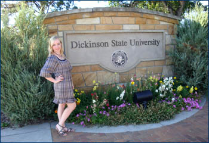

|
Обучение
в США, бесспорно, даёт студентам дополнительные возможности, не
только связанные с получением более перспективной работы, но и способствует
саморазвитию.
Проблема трудоустройства молодежи после получения диплома стоит
очень остро. В данный момент эта ситуация усугубляется мировым экономическим
кризисом. В условиях высокой конкуренции на рынке труда нам просто
необходимо совершенствоваться и повышать свою квалификацию.
На
данный момент мы, Ефимова Екатерина и Костян Валерия, являемся одновременно
студентками ВГУ и Dickinson State University по специальности International
Business. Для нас образование в Dickinson State University стало
следующей ступенью нашего развития.
Каждый
человек, приезжая заграницу, может испытать культурный шок. Прежде
всего, это связано с разницей в уровне жизни и менталитете. США
отличаются от всего остального мира, но, как и все иностранцы, американцы
приветливы на бытовом уровне.
С другой стороны, то, что Америка – страна только лишь небоскребов
и повсеместной демократии, это миф. Большую часть занимает именно
«одноэтажная Америка». Ярчайшим примером может служить Дикинсон
- город с численностью населения 16 тысяч человек, с большим количеством
людей разных национальностей. Что касается Dickinson State University,
то здесь каждому студенту уделяется особое внимание. Проводятся
обязательные курсы для иностранцев, чтобы сделать период их адаптации
наименее стрессовым.
Также
широко распространенна практика так называемой приемной семьи. Эти
семьи помогают иностранным студентам лучше понять американскую культуру
и традиции.
Говоря о студенческой жизни, в целом она во многом похожа. Конечно,
существуют некоторые нюансы, такие как простота в общении, увлечение
спортом как неотъемлемая часть студенческого быта, абсолютная материальная
независимость от родителей благодаря работе. Dickinson State University
заинтересован в оказании помощи студентам, поэтому по возможности
помогает в поисках работы.
Подводя
итог нашего годового пребывания в Dickinson State University, мы
можем сказать, что не только получили возможность улучшить наши
языковые знания, но и смогли приобрести ценный жизненный опыт.
Ефимова Екатерина, студентка ФМО
Костян Валерия, студентка ФМО
Маленький городок под названием Дикинсон, окруженный равнинами, с населением 17 тыс. человек расположен в штате Северная Дакота, который известен своей неприветливой погодой и гостеприимным населением. Дикинсон по праву можно считать уникальным местом для получения образования и развития себя как личности.
Во-первых, необходимо отметить наличие университета, в который ежегодно съезжаются студенты со всех уголков земли. Вы можете оказаться в одной группе с ребятами из Германии, Китая, Монголии, Болгарии, Непала и России, что даёт замечательную возможность обогатить свои знания о различных культурах, традициях и стилях жизни.
Во-вторых, университет оснащен новейшим оборудованием: в каждой аудитории находится пректор и компьютеры со свободным доступом к Интернету. В библиотеке тоже достаточно компьютеров и огромный выбор периодики, которая обновляется ежемесячно. Так же хотела бы отметить, что в каждом корпусе находятся компьютерные лаборатории, которые всегда открыты и позволяют проводить своё время в поисках материалов для подготовки домашних заданий.
В-третьих, наиболее приятный момент заключается в том, что студент имеет право выбирать предметы. Безусловно, существует определённый перечень дисциплин необходимый для вашей специальности, но помимо этого стандарта учащийся может на свое усмотрение добавить любой другой предмет.
Я хотела бы обратить внимание на имеющийся в университете центр, где американские студенты бесплатно помогают всем желающим иностранным студентам с учебными проблемами. Приветливые и понимающие американцы рады помочь каждому. Список преимуществ данного университета не заканчивается. Пару слов необходимо сказать и о спортивной жизни. В распоряжении студентов находятся бассейн и тренажерный зал, параллельно можно посещать занятия йогой или фит-болом.
Помимо учебной жизни, я хотела бы поделиться своими впечатлениями о местном населении. К моему великому удивлению, люди, населяющие этот милый городок, очень открытые, приветливые и всегда готовы помочь. При встрече они всегда улыбаются и здороваются, даже если видят тебя впервые. Также каждую пятницу американские студенты бесплатно возят всех желающих иностранных студентов в супермаркет.
В заключении, хотела бы сказать, что время, проведённое здесь, является уникальным жизненным опытом, который, безусловно, пригодится вам в жизни.
Татьяна Хмелюк
студентка 3-го
направление «Регионоведение»
Факультет Международных Отношений ВГУ предоставляет своим студентам возможность принять участие в программах обучения за рубежом, в том числе и в США. Я проходила обучение в Государственном Университете г. Дикинсон в течение двух лет по программе двойного диплома, по направлению Бизнес Администрирование (Business Administration) и по специальности Банки и Финансы (Banking and Finance). Сказать честно, я бесконечно рада, что не упустила возможность поехать за границу.
Жизнь в маленьком городке Дикинсон пролетает незаметно за посещением занятий, выполнением домашних заданий, за подготовкой различных презентаций, принятием участия в студенческих конференциях и других научных, спортивных и культурных мероприятиях. Университетские здания, общежития, столовая, библиотека, бассейн, тренажерный зал и другие корпуса образуют так называемый campus. Поэтому все студенты проживают, учатся, занимаются спортом и даже кушают вместе, так что скучать там просто некогда.
Одним из самых главных преимуществ университета для меня является тот факт, что я познакомилась с людьми из разных уголков мира, ведь в Дикинсон студенты приезжают как из других штатов Америки, так и зарубежных стран (Белоруссии, Азербайджана, Болгарии, Германии, Франции, Польши, Китая, Кореи, Африки, Непала и т.д.) Таким образом, знакомясь со студентами различных культур, я приобрела бесценный опыт общения с людьми.
Процесс обучения показался мне очень интересным, хотя и непривычным. Студенты сами выбирают себе предметы и составляют расписание: кому-то удобнее заниматься в первой половине дня, а кому-то во второй. Кроме того, помимо обязательных предметов по специальности, каждый может взять уроки музыки или танца. Преподаватели на своих занятиях показывают презентации или видео, поэтому новый материал усваивается легче. Сессий как таковых нет, оценка ставится по успеваемости в течение всего семестра, зато домашнего задания много и на каждый день. Приложив усилий, я не только усовершенствовала свой английский язык, но и получила много новых знаний по своей специальности в области мировой экономики.
Очень радует, что большинство студентов занимается спортом. Практически каждую неделю мы ходили болеть за наших ребят на волейбольные, футбольные, баскетбольные или бейсбольные матчи. Безусловно, запомнится на всю жизнь и мое участие в коллективе группы поддержки. Вместе с группой мы болели за наших спортсменов на футбольных и баскетбольных играх.
Подводя итоги, хочется сказать, что за два года обучения в Dickinson State University я получила не только много новых эмоций и впечатлений, но и квалифицированные знания в области международного бизнеса и финансов. Советую и вам не упускать свой шанс.
|